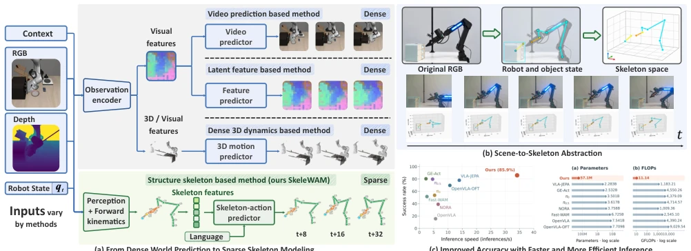
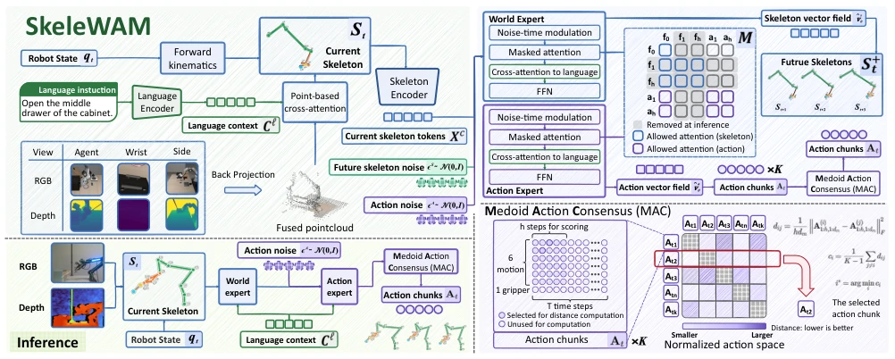
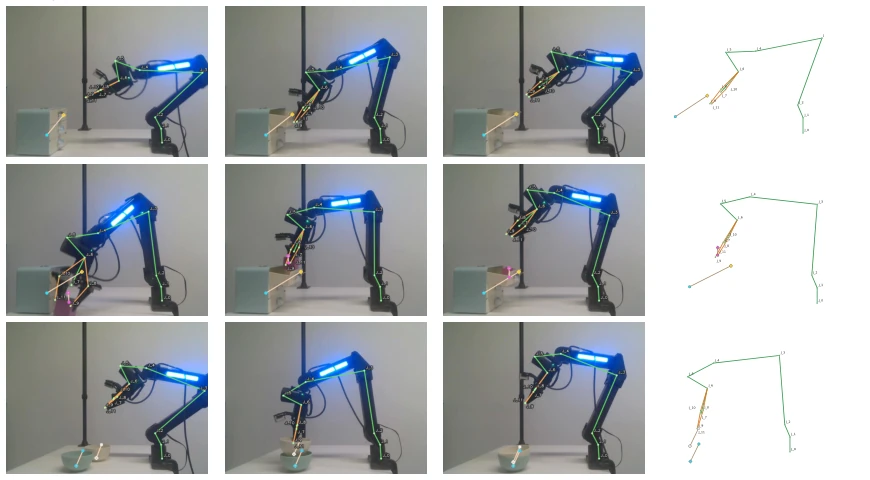

SkeleWAM's "fat-reducing and thin-increasing" strategy is quite adept, directly throwing the flashy pixels and video predictions into the trash, keeping only a sparse skeleton. This is like others struggling to sketch every hair on the model's body, while it directly draws a stick figure to command the robot to work, cutting parameters from billions to 57 million, simply a master of "decluttering" in the parameter world. However, this strategy also has a weakness: once the scene layout is completely changed, such as moving everything on the table, this "stick figure" gets a bit blind, and the success rate plummets directly. It seems that with only skeleton and no flesh and blood, encountering complex environments still relies on luck. Although it boasts that "sparse geometry" can handle all, experimental data honestly admits its shortcomings under layout perturbation. This is not a general model at all, clearly just a "scene fixer".
Existing World Action Models (WAMs) are mostly obsessed with predicting video or visual latents (visual latents), such as Cosmos-Policy [11] and WorldVLA [3]. This "pixel-level" prediction is not only computationally massive, but also like a layer of fog, blurring the key geometric information of robot-object interaction (such as spatial configuration, relative motion). As pointed out in literature [11] and [19], compressing visual information does not automatically isolate the geometric variables required for control. Worse still, these models often require massive parameter counts to maintain this implicit representation, leading to slow inference and difficult deployment. SkeleWAM's core motivation is to question: since control only cares about "where the hand is, where the object is, how to touch", why must the whole scene be reconstructed? The authors attempt to prove that using sparse 3D skeletons (robot joints + object centers + interaction points) to replace dense visual features can not only significantly reduce model complexity, but also provide more explicit geometric supervision, thereby achieving true parameter efficiency while maintaining or even improving performance.

Figure 1. Sparse skeleton states enable efficient world action modeling. Existing world action models represent future states as videos, visual latents, or dense 3D dynamics. In contrast, SkeleWAM converts RGB-D observations and robot states into a sparse 3D skeleton comprising robot joints, object centers, and interaction points. During training, it jointly learns robot action generation and future skeleton prediction. This explicit geometric representation achieves a favorable trade-off among task success, inference speed, model size, and computational cost.
SkeleWAM's overall process is "perception is skeleton, prediction is supervision". First, the system extracts object center points and interaction points from RGB-D images through a frozen visual perception network, combined with joint positions calculated by robot Forward Kinematics, online constructing a sparse 3D skeleton state $S_t$. This skeleton consists of robot joints, object centers, and interaction points connecting them, constituting a unified geometric state space. Next, the model adopts a Dual-Expert (Two-Expert) Transformer architecture, containing "World Expert" and "Action Expert". In the training phase, the model learns two tasks simultaneously: one is generating action sequences based on current skeleton and language instructions (Action Generation), the second is predicting future skeleton state sequences (Future Skeleton Prediction). This future skeleton prediction is not for inference, but rather as an auxiliary supervision signal, forcing the model to learn more accurate geometric dynamics, without needing to reconstruct visual appearance. In the inference phase, the future prediction branch is directly removed, the model only generates actions based on current skeleton and instructions. Additionally, to solve the randomness problem brought by diffusion model sampling, the authors introduce the "Medoid Action Consensus (MAC)" strategy: generating multiple candidate action trajectories, calculating the average distance between them, selecting the most "central" (i.e., most similar to other trajectories) one as the final executed action, without needing an additional reward model.

Figure 2. Overview of SkeleWAM. Frozen visual perception and forward kinematics construct the current skeleton. Action generation and future skeleton prediction are jointly trained with shared current-skeleton context. At inference, future skeleton prediction is omitted, and Medoid Action Consensus (MAC) selects a representative sampled action chunk. The robot executes its first He actions before observing and replanning.
The study was validated on the LIBERO-Plus benchmark (containing 10,030 variants) and a real-world ARX R5 robot. Main comparison baselines include OpenVLA, π0.5, Cosmos-Policy, etc. Results show, SkeleWAM with only 57.1M parameters achieved an overall success rate of 85.9% on LIBERO-Plus, 3.7 percentage points higher than the strongest observation baseline Cosmos-Policy, and up to 93.4% under camera perturbation. In real-world experiments, its average success rate reached 89%, superior to Cosmos-Policy's 87%. Ablation experiments revealed several key points: 1) Using object centers and interaction points simultaneously performs better than using either alone; 2) Future skeleton prediction as a supervision signal is crucial, after removal success rate drops by nearly 6%; 3) MAC strategy is best when K=3. However, experiments also exposed limitations: Under layout perturbation (Layout Perturbation), success rate was only 66.6%, far lower than π0.5's 84.1%, indicating that sparse geometric representation still has generalization bottlenecks when handling brand new spatial layouts.

Figure 3. Qualitative real-world results. Representative rollouts for opening a drawer, placing a block in a drawer, and stacking bowls. Each row shows the early, interaction, and late stages of a successful rollout, together with the corresponding sparse 3D skeleton. Success rates are computed over 20 trials per task.